I'm Md. Zahirul Islam — friends call me Rasel. For 13+ years I've designed, run and analysed surveys, impact evaluations and randomized controlled trials for universities, UN agencies, governments and NGOs, and built the data systems and software that keep those programmes running.
years in research & evaluation
research & evaluation assignments
international partners
live web & software platforms
One pipeline, owned end to end.
Most studies break in the hand-offs. I work across all six stages, so the form logic, the field protocol, the cleaning code and the dashboard are written by the same person.
Selected studies.
Field experiments, evaluations and large surveys with university and multilateral teams. Ten of 107 — the full index lives on iamzahirul.com.
households in one survey — Dhaka Strategic Transport Plan (ADB / DTCA)
teachers screened by phone for a World Bank study
students in a 468-school World Bank RCT
divisions of Bangladesh with fieldwork
82 platforms, still running.
Research ends; systems shouldn't. Clinic and hospital portals, school result systems, MIS for small businesses, marketplaces, a Bangla news portal — plus open-source tools on GitHub.
The toolkit.
Picked for the job, not the trend: statistical packages the PIs trust, collection platforms that survive bad networks, and lightweight web tech that deploys in minutes.

18 years of work. 13+ in research.
From R&D at Chowdhury Group to field experiments with ARCED Foundation and multi-country evaluation teams with ARCED International.
-
HEAD · 2025 — present
Research & Data Management Specialist
ARCED International · Dhaka / East & Southern Africa- Data-management lead on multi-country evaluation teams and technical proposals: data-collection tools, digital data systems and quality-assurance plans.
- Builds instruments (SurveyCTO, ODK, KoBoToolbox), interview trackers, double-coding, high-frequency checks and reproducible analysis pipelines.
- Writes methodology, sampling, data-management and QA sections; supports budgeting.
-
main · May 2013 — present
Senior Project Associate
ARCED Foundation · Dhaka- 107 documented assignments: baselines, midlines, endlines, impact evaluations, RCTs, tracer studies and large listing surveys.
- Research design and sampling, instrument programming with built-in checks, enumerator training, supervision, back-checks and audio audits, daily reporting to PIs.
- Cleaning and analysis in Stata, R and Python; dashboards; reports.
-
Aug 2008 — Apr 2013
Senior Research Officer (R&D)
Chowdhury Group- Where the habit of building systems for other people began.
On the record.
Peer-reviewed articles, a preprint and study reports. Client evaluation reports are shared where the commissioning organisation permits.
- 2024journal articleDOI ↗
Determinant on Economic Growth in Developing Country: A Special Case Regarding Turkey and Bangladesh
Bazaluk, O., Kader, S. A., Zayed, N. M., Islam, Md. Zahirul, et al. · Journal of the Knowledge Economy (Springer)
- 2024preprintDOI ↗
An examination of residents' mental health in particular Dhaka City neighborhoods in the context of civic health and environmental well-being
Gomes, R., & Islam, M. · Research Square
- 2024study reporton request
Building Sustainable Futures: Integrative Strategies for Disaster Resilience and Economic Empowerment in Cox's Bazar
Islam, Md. Z., Chowdhury, R., & Alam, Md. M. · ARCED Foundation with GUK — baseline of 908 Rohingya and host-community participants
- 2022journal articleJournal ↗
COVID-19 lockdowns and tobacco use among private university students in Dhaka, Bangladesh
Ishaq, M., Islam, Md. E., Rahman, H., Rahman, & Islam, Md. Z. · Global Journal for Research Analysis, 11(2)
Got a survey, an evaluation
or a data system to build?